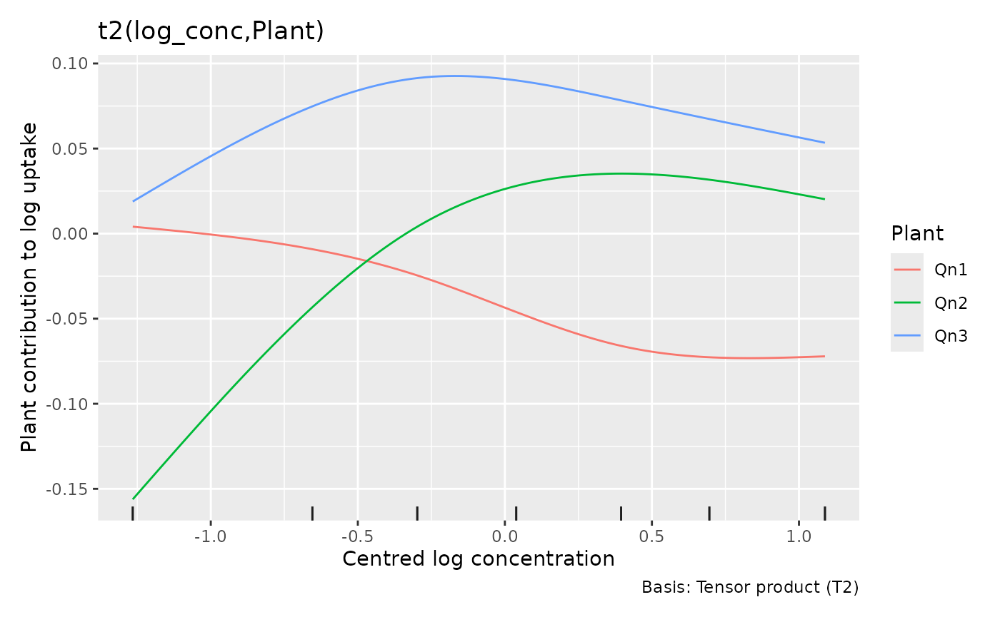
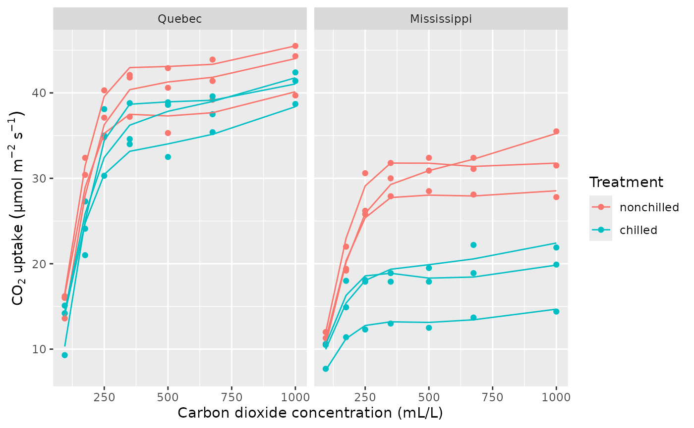
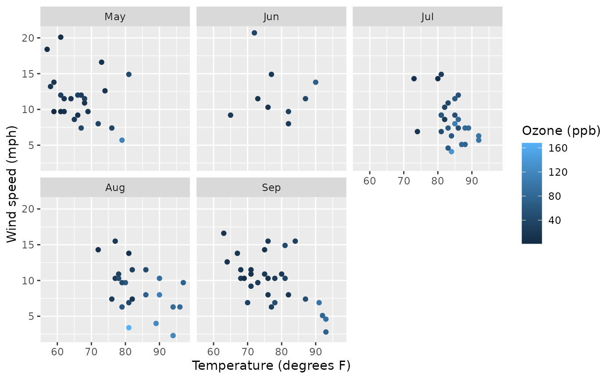
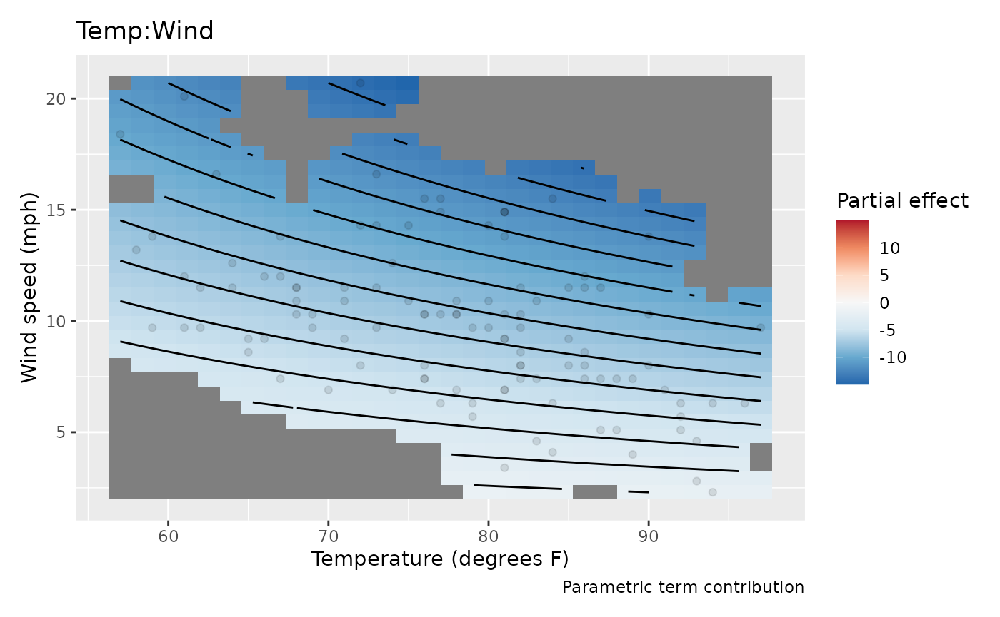
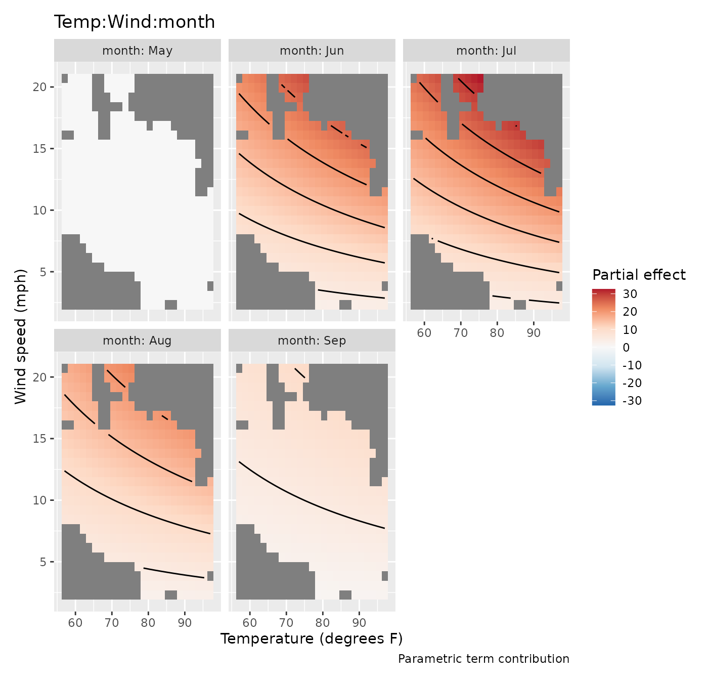
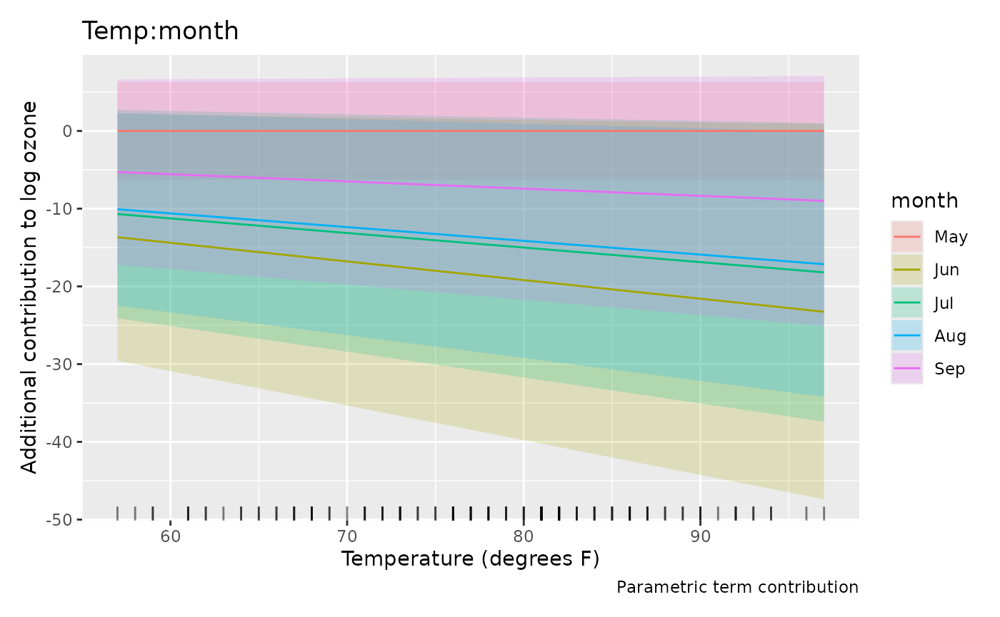
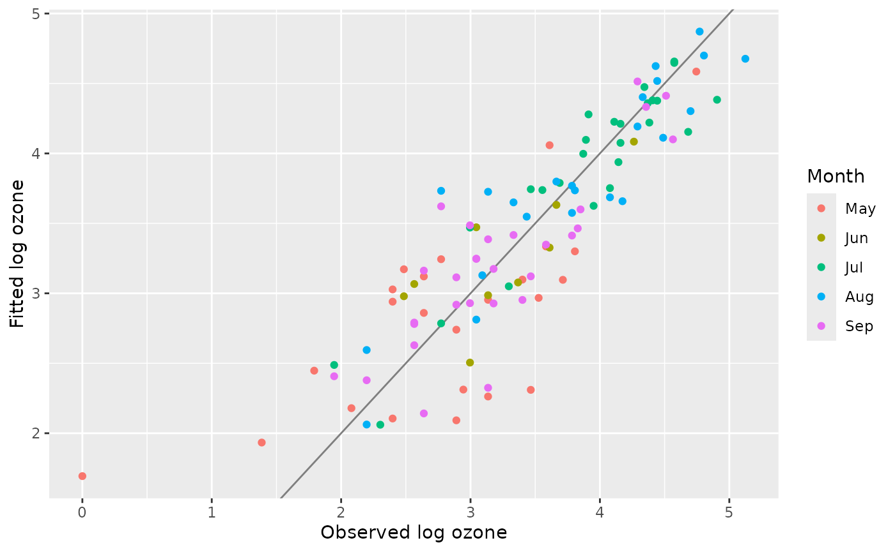
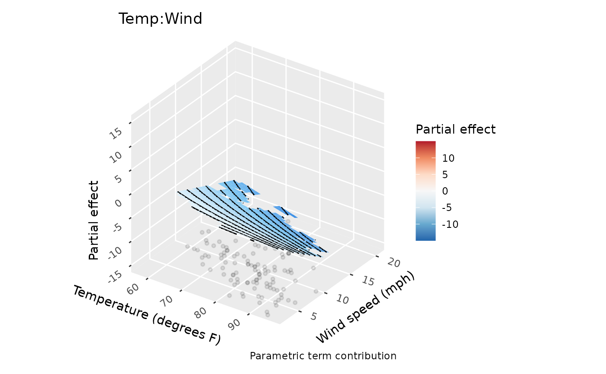

Plotting group-specific smooths and parametric interactions
Source:vignettes/articles/smooth-effects.Rmd
smooth-effects.RmdEffect plots show how one smooth or parametric term contributes to the linear predictor. To obtain the expected response in these examples, add the model terms and intercept, then apply the inverse link. In the log-link model below, that means exponentiating the sum to get mean carbon dioxide uptake. We use the plant experiment from Working with glmmTMB models in gratia to plot curves for individual plants, then use daily air quality measurements to plot interactions between continuous and categorical predictors.
Load {gratia}, {mgcv} and {ggplot2} for the examples.
Fit and plot plant-specific smooth curves
The carbon dioxide experiment measured uptake at seven concentrations
on each of twelve plants, with three plants per combination of origin
and treatment. The Gamma model with a log link keeps the fitted means
positive and lets the spread increase with the mean. In the model below,
s(log_conc) allows the shared uptake curve to level off as
concentration increases. The t2() term combines a spline
for concentration with a plant random effect so that each plant can have
its own smooth departure from the shared curve.
plant <- as.data.frame(CO2)
plant$Plant <- factor(plant$Plant, ordered = FALSE)
plant$log_conc <- log(plant$conc) - mean(log(plant$conc))
plant_gam <- gam(
uptake ~ Type * Treatment + s(log_conc, k = 5) +
t2(log_conc, Plant, bs = c("cr", "re"), k = c(4, 12), full = TRUE),
data = plant, family = Gamma(link = "log"), method = "REML")
overview(plant_gam)
#>
#> Generalized Additive Model with 6 terms
#>
#> term type k edf ref.edf statistic p.value
#> <chr> <chr> <dbl> <dbl> <dbl> <dbl> <chr>
#> 1 Intercept parame… NA 1 1 52.7 < 0.001
#> 2 TypeMississippi parame… NA 1 1 -3.31 0.00181
#> 3 Treatmentchilled parame… NA 1 1 -1.26 0.21419
#> 4 TypeMississippi:Treatmentchilled parame… NA 1 1 -2.57 0.01349
#> 5 s(log_conc) TPRS 4 3.85 3.96 79.2 < 0.001
#> 6 t2(log_conc,Plant) Tensor… 48 30.3 43 8.76 < 0.001The penalties pull plant-specific departures towards zero. With
full = TRUE, the model can penalise different parts of the
tensor product separately. The concentration basis is small because
there are only seven observations per plant. Use re_levels
to plot the departures for three named plants from the nonchilled Quebec
group.
smooths(plant_gam)
#> [1] "s(log_conc)" "t2(log_conc,Plant)"
draw(plant_gam, select = "t2(log_conc,Plant)",
re_levels = list(Plant = c("Qn1", "Qn2", "Qn3")),
xlab = "Centred log concentration", ylab = "Plant contribution to log uptake") &
theme(legend.position = "right") & labs(colour = "Plant")
The concentration goes on the horizontal axis even if the plant
factor comes first in the tensor formula. re_levels selects
which plants to display and keeps their order from the fitted factor. To
see the fitted mean for each plant, plot the fitted values against the
observations. These values combine the shared curve, the plant’s
departure, the intercept and the terms for origin and treatment before
applying the inverse link. The concentration units are microlitres per
litre (\mu\mathrm{L}\,\mathrm{L}^{-1}),
as reported in Table 1 of the original
study.
plant$mean_uptake <- fitted(plant_gam)
ggplot(plant, aes(conc, uptake, group = Plant, colour = Treatment)) +
geom_point() +
geom_line(aes(y = mean_uptake)) +
facet_wrap(~ Type) +
labs(x = expression(CO[2] ~ concentration ~ (mu * L ~ L^{-1})),
y = expression(CO[2] ~ uptake ~ (mu * mol ~ m^{-2} ~ s^{-1})))
The fitted curves rise rapidly and then flatten for these plants.
They include each plant’s estimated departure. At the group level, the
model assumes the same concentration response shape for all combinations
of origin and treatment, with group differences entering as multipliers
of mean uptake. Use variance_comp() to extract the variance
components for the penalties on the shared smooth and the plant-specific
departures.
variance_comp(plant_gam)
#> # A tibble: 5 × 5
#> .component .variance .std_dev .lower_ci .upper_ci
#> <chr> <dbl> <dbl> <dbl> <dbl>
#> 1 s(log_conc) 0.320 0.566 0.248 1.29
#> 2 t2(log_conc,Plant)rr 0.000106 0.0103 0.00640 0.0165
#> 3 t2(log_conc,Plant)1r 0.000957 0.0309 0.0186 0.0515
#> 4 t2(log_conc,Plant)2r 0.000502 0.0224 0.0141 0.0355
#> 5 scale 0.00346 0.0588 0.0471 0.0734The spline rows describe how strongly the model penalises different
parts of the fitted curves. The scale row estimates the
Gamma dispersion. Multiplying it by the squared fitted mean gives the
estimated variance of uptake around that mean.
Fit temperature, wind and month interactions
The airquality data contain daily New York measurements
from May to September 1973. Ozone is in parts per billion, temperature
in degrees Fahrenheit, wind speed in miles per hour, and solar radiation
in Langleys; see ?datasets::airquality for the sources. We
retain complete cases, so our analysis uses the days with all needed
measurements.
The question is whether ozone’s association with temperature depends on wind, and whether that relationship is stable across summer months. We model log ozone with a Gaussian distribution, allow a smooth association with solar radiation, and use a temperature-by-wind-by-month interaction.
ozone <- na.omit(airquality[c("Ozone", "Solar.R", "Wind", "Temp", "Month")])
ozone$month <- factor(ozone$Month, labels = month.abb[5:9])
contrasts(ozone$month) <- contr.treatment(levels(ozone$month))
ozone_gam <- gam(log(Ozone) ~ s(Solar.R, k = 6) + Temp * Wind * month,
data = ozone, method = "REML")
table(ozone$month)
#>
#> May Jun Jul Aug Sep
#> 24 9 26 23 29
overview(ozone_gam)
#>
#> Generalized Additive Model with 21 terms
#>
#> term type k edf ref.edf statistic p.value
#> <chr> <chr> <dbl> <dbl> <dbl> <dbl> <chr>
#> 1 Intercept parametric NA 1 1 -2.56 0.01214
#> 2 Temp parametric NA 1 1 3.64 < 0.001
#> 3 Wind parametric NA 1 1 2.50 0.01423
#> 4 monthJun parametric NA 1 1 1.99 0.04966
#> 5 monthJul parametric NA 1 1 2.31 0.02322
#> 6 monthAug parametric NA 1 1 2.88 0.00501
#> 7 monthSep parametric NA 1 1 1.40 0.16547
#> 8 Temp:Wind parametric NA 1 1 -2.64 0.00975
#> 9 Temp:monthJun parametric NA 1 1 -2.18 0.03153
#> 10 Temp:monthJul parametric NA 1 1 -2.41 0.01808
#> # ℹ 11 more rowsA three-way interaction gives each month its own temperature-by-wind surface. Estimates can be imprecise where a month has few observations at similar temperatures and wind speeds. Plot those observations before interpreting the fitted surfaces.
ggplot(ozone, aes(Temp, Wind, colour = Ozone)) +
geom_point() +
facet_wrap(~ month) +
labs(x = "Temperature (degrees F)", y = "Wind speed (mph)",
colour = "Ozone (ppb)")
Plot the separate interaction contributions
Start with the temperature-by-wind interaction for May, the reference
month. parametric_terms() lists the available terms;
parametric_effects() evaluates the chosen contribution on a
grid for plotting.
parametric_terms(ozone_gam)
#> Temp Wind month Temp:Wind
#> "Temp" "Wind" "month" "Temp:Wind"
#> Temp:month Wind:month Temp:Wind:month
#> "Temp:month" "Wind:month" "Temp:Wind:month"
weather_effect <- parametric_effects(ozone_gam, terms = "Temp:Wind", n_2d = 30)
draw(weather_effect, surface = "tile") &
labs(x = "Temperature (degrees F)", y = "Wind speed (mph)")
Each point on the surface shows the fitted coefficient for
Temp:Wind multiplied by the temperature and wind speed. The
colours show how much this term adds to or subtracts from fitted
log ozone. This is the interaction for May and the
starting point for the other months’ interactions.
surface = "tile" uses vector rectangles, which can be
useful in a vector figure. The default "raster" keeps large
plots compact. n_2d = 30 evaluates 30 points along each
surface axis. Increase n_2d for a finer display of the same
fitted surface. Next plot how each month’s temperature-by-wind
interaction differs from May’s.
draw(parametric_effects(ozone_gam, terms = "Temp:Wind:month", n_2d = 25),
surface = "tile") &
labs(x = "Temperature (degrees F)", y = "Wind speed (mph)")
The model uses treatment contrasts with May as the reference month,
so the adjustment is zero in May. The panels share a colour scale
centred at zero. dist controls how far a grid point can be
from the observations before it is hidden, after scaling the two axes to
range from zero to one. This uses observations from all months. Use the
monthly scatterplots above to see which parts of each surface are
supported by observations from that month.
Plot the temperature-by-month interaction to see how it adjusts the main temperature slope. Each month has its own straight line because the term is linear in temperature.
draw(parametric_effects(ozone_gam, terms = "Temp:month")) &
labs(x = "Temperature (degrees F)", y = "Additional contribution to log ozone")
These slopes must be combined with the reference temperature slope and the wind interactions to describe the model’s temperature association. The conditional comparisons article shows how to compare complete fitted values without isolating contrast-coded terms.
For a direct view of the complete model, predict at observed weather conditions:
ozone$fitted_log <- fitted(ozone_gam)
ggplot(ozone, aes(log(Ozone), fitted_log, colour = month)) +
geom_abline(slope = 1, intercept = 0, colour = "grey50") +
geom_point() +
labs(x = "Observed log ozone", y = "Fitted log ozone", colour = "Month")
The plot shows how closely the fitted mean log ozone follows the observed log concentrations. Under this model, exponentiating the fitted values gives the conditional median ozone concentration. To calculate the conditional arithmetic mean on the original scale, also account for the residual variance on the log scale. Similar residuals on nearby days could affect the uncertainty in monthly comparisons, so check residuals against the observation dates.
Show an interaction surface in three dimensions
The optional {ggcube} package can show the same numerical surface in three dimensions:
if (requireNamespace("ggcube", quietly = TRUE)) {
draw(weather_effect, surface = "3d",
surface_3d = list(yaw = 35, persp = FALSE)) &
labs(x = "Temperature (degrees F)", y = "Wind speed (mph)")
}
Height and fill both represent the same partial contribution. Use the flat plots with their common colour scale to compare surfaces across months.
Parametric effect plots use the model’s covariate scale by default.
For example, a term involving log(x) uses
log(x) on the horizontal axis.
back_transform = TRUE displays original covariate
coordinates without changing effect values or intervals. With saved
smooth estimates, prepare them using
smooth_estimates(model, back_transform = TRUE) before
asking draw() to use that scale. See the article on transformed covariates
for worked examples, including transformations without an analytic
inverse.
By default, the intervals include uncertainty in the intercept and
its covariance with the plotted term. Set
overall_uncertainty = FALSE for intervals that reflect
uncertainty in the term alone. An interval for the difference between
two predictions needs to account for their covariance.